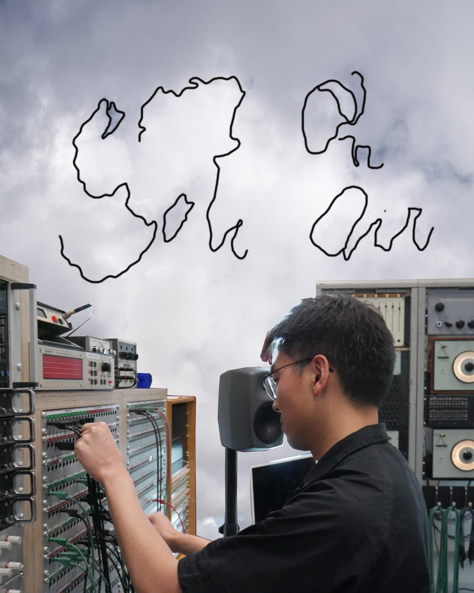

News
Live with Puck Wacki on Klankvorm’s Kinetic Sounds at Conflux Festival, Katoenhuis, Rotterdam
Live with Puck Wacki at Keep.Space.Fest #3, De Nijverheid, Utrecht
Live performance with a work-in-progress music system at Kunstbar, The Hague
Sharing speech-oriented computer music with Gg[ghay] in a radio podcast on Radio Worm, Rotterdam
